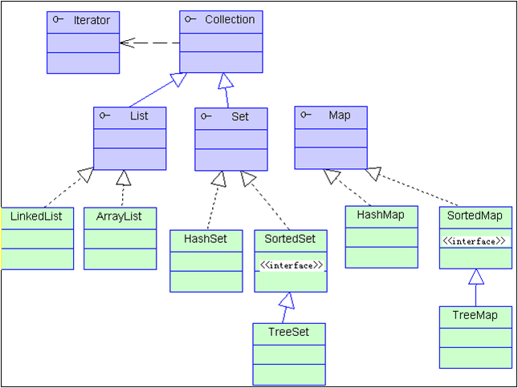

1、List和Set的区别
Java中的集合共包含三大类，它们分别是Set（集），List（列表）以及Map（映射）。它们都处在java.util中并且都为接口。它们各自都有各自的实现类。Set的实现类主要有HashSet和TreeSet，List的实现类主要有ArrayList
（1）重复对象
list方法可以允许重复的对象，而set方法不允许重复对象
（2）null元素
list可以插入多个null元素，而set只允许插入一个null元素
（3）容器是否有序
list是一个有序的容器，保持了每个元素的插入顺序。即输出顺序就是输入顺序，而set方法是无序容器，无法保证每个元素的存储顺序，TreeSet通过 Comparator 或者 Comparable 维护了一个排序顺序
（4）常用的实现类
list方法常用的实现类有ArrayList、LinkedList 和 Vector。其中ArrayList 最为流行，它提供了使用索引的随意访问，而LinkedList 则对于经常需要从 List 中添加或删除元素的场合更为合适，Vector 表示底层数组，线程安全
Set方法中最流行的几个实现类是 HashSet、LinkedHashSet 以及 TreeSet。最流行的是基于 HashMap实现的 HashSet；TreeSet 还实现了 SortedSet 接口，因此 TreeSet 是一个根据其 compare() 和compareTo() 的定义进行排序的有序容器
2、List常用的实现类
1、ArrayList
非线程安全
基于对象数组
get(int index)不需要遍历数组，速度快；
iterator()方法中调用了get(int index)，所以速度也快
set(int index, E e)不需要遍历数组，速度快
add方法需要考虑扩容与数组复制问题，速度慢
remove(Object o)需要遍历数组，并复制数组元素，速度慢
remove(int index)不需要遍历数组，需要复制数组元素，但不常用
contain(E)需要遍历数组
2、LinkedList
非线程安全
基于环形双向链表
get(int index)需要遍历链表，速度慢；
iterator()方法中调用了get(int index)，所以速度也慢
set(int index, E e)方法中调用了get(int index)，所以速度也慢
add方法不需要考虑扩容与数组复制问题，只需创建新对象，再将新对象的前后节点的指针指向重新分配一下就好，速度快
remove(Object o)需要遍历链表，但不需要复制元素，只需将所要删除的对象的前后节点的指针指向重新分配一下以及将所要删除的对象的三个属性置空即可，速度快
remove(int index)需要遍历链表，但不需要复制元素，只需将所要删除的对象的前后节点的指针指向重新分配一下以及将所要删除的对象的三个属性置空即可，但不常用
contain(E)需要遍历链表
3、Vector（线程安全的ArrayList）
线程安全
扩容机制与ArrayList不同
4、Stack（继承于Vector）
线程安全
效率低下，可采用双端队列Deque或LinkedList来实现，Deque用的较多
总结：
在查询（get）、遍历（iterator）、修改（set）使用的比较多的情况下，用ArrayList
在增加（add）、删除（remove）使用比较多的情况下，用LinkedList
在需要线程安全而且对效率要求比较低的情况下，使用Vector，当然，实现ArrayList线程安全的方法也有很多，以后再说
在需要使用栈结构的情况下，使用Deque，Stack废弃就行了
3、ArrayList和LinkedList的区别
1. Array
Array（数组）是基于索引(index)的数据结构，它使用索引在数组中搜索和读取数据是很快的。
Array获取数据的时间复杂度是O(1),但是要删除数据却是开销很大，因为这需要重排数组中的所有数据, (因为删除数据以后, 需要把后面所有的数据前移)
缺点: 数组初始化必须指定初始化的长度, 否则报错
例如:
int[] a = new int[4];//推介使用int[] 这种方式初始化
int c[] = {23,43,56,78};//长度：4，索引范围：[0,3]
2. List
List—是一个有序的集合，可以包含重复的元素，提供了按索引访问的方式，它继承Collection。
List有两个重要的实现类：ArrayList和LinkedList
List是一个接口，不可以实例化, 不能写成如下：
1 | List<Integer> list = new List<Integer>();//错误 |
- 类继承关系


3. ArrayList
ArrayList: 可以看作是能够自动增长容量的数组
ArrayList的toArray方法返回一个数组
ArrayList的asList方法返回一个列表
ArrayList底层的实现是Array, 数组扩容实现
ArrayList扩容的核心方法grow()
新增数据空间判断
新增数据的时候需要判断当前是否有空闲空间存储
扩容需要申请新的连续空间
把老的数组复制过去
新加的内容
回收老的数组空间
4. LinkList
LinkList是一个双链表,在添加和删除元素时具有比ArrayList更好的性能.但在get与set方面弱于ArrayList.当然,这些对比都是指数据量很大或者操作很频繁。
链表不需要连续的空间, 大小不确定
小结
同样查找, 时间复杂度都是O(N), 但是数组要比链表快
因为数组的连续内存, 会有一部分或者全部数据一起进入到CPU缓存, 而链表还需要在去内存中根据上下游标查找, CPU缓存比内存块太多
数据大小固定, 不适合动态存储, 动态添加, 内存为一连续的地址, 可随机访问, 查询速度快
链表代销可变, 扩展性强, 只能顺着指针的方向查询, 速度较慢
4、Set常用的实现类
一个不包含重复元素的 collection。更确切地讲，set 不包含满足 e1.equals(e2) 的元素对 e1 和 e2，并且最多包含一个 null 元素。常用的实现类有HashSet、LinkedHashSet、TreeSet
HashSet定义及特点
public class HashSet extends AbstractSet implements Set, Cloneable, Serializable
- 实现原理，基于哈希表（HashMap）实现
- 不允许重复，最多可以有一个null元素
- 不保证顺序恒久不变
- 添加元素时把元素作为HashMap的key保存，HashMap的value使用一个固定的Object对象
- 排除重复是通过equals方法来检查对象是否相等
- 判断两个对象是否相同，先判断两个对象的hashCode是否相同（两个对象的hashCode相等不一定是同一个对象，但如果不同，一定不是同一个对象），若不同，则两个对象不是同一个对象；若相同，还要进行equals判断。equals方法返回true则为同一个对象，返回false则不是同一个对象。
- 自定义类存入HashSet时，建议重写类的hashCode和equals方法
哈希表的存储结构：数组+链表，数组里的每个元素以链表的形式存储
如何把对象存储到哈希表中？先计算对象的hashCode值再对数组的长度求余数，来决定对象要存储在数组中的哪个位置。
TreeSet定义及特点
public class TreeSet extends AbstractSet implements NavigableSet, Cloneable, Serializable
- 基于 TreeMap 的 NavigableSet 实现。使用元素的自然顺序对元素进行排序，或者根据创建 set 时提供的 Comparator 进行排序，具体取决于使用的构造方法。
- 有序的，基于TreeMap(二叉树数据结构)实现，对象需要比较大小，通过对象比较器来实现。对象比较器还可以用来去除重复元素，若自定义的类没有实现比较器（Comparable）接口，将无法添加到TreeSet中。
LinkedHashSet定义及特点
public class LinkedHashSet extends HashSet implements Set, Cloneable, Serializable
具有可预知迭代顺序的 Set 接口的哈希表和链接列表实现。此实现与 HashSet 的不同之外在于，后者维护着一个运行于所有条目的双重链接列表。此链接列表定义了迭代顺序，即按照将元素插入到set 中的顺序（插入顺序）进行迭代。注意，插入顺序不 受在 set 中重新插入的 元素的影响。如果在 s.contains(e) 返回 true 后立即调用 s.add(e)，则元素 e 会被重新插入到 set s 中。）
如何选择Set接口的具体实现？
- 如果要排序，选TreeSet
- 如果不用排序，也不用保证顺序，选HashSet
- 如果不用排序，要保证顺序，选LinkedHashSet
5、HashSet和LinkedHashSet的区别
HashSet是采用hash表来实现的。其中的元素没有按顺序排列，add()、remove()以及contains()等方法都是复杂度为O(1)的方法。
TreeSet是采用树结构实现(红黑树算法)。元素是按顺序进行排列，但是add()、remove()以及contains()等方法都是复杂度为O(log (n))的方法。它还提供了一些方法来处理排序的set，如first(), last(), headSet(), tailSet()等等。
LinkedHashSet介于HashSet和TreeSet之间。它也是一个hash表，但是同时维护了一个双链表来记录插入的顺序。基本方法的复杂度为O(1)。
6、int和Integer的区别
- int是基本数据类型，Integer是int包装类。
- Integer变量必须实例化后才能使用，int可以直接使用
- Integer的默认值是null，int默认值是0
- Integer变量实际上是对象的引用，指向new的Integer对象，int是直接存储数据
深入对比
1 | Integer a = new Integer(10); |
结果前false，后true。
因为Integer变量是对Integer对象的引用，new了两个对象，显然内存地址不一样，引用不一样。
而Integer重写了equals方法，数值一样就返回true。
1 | public static void main(String[] args) { |
结果前true，后false
因为Integer自动装箱时对数值在-128到127的对象放入缓存中，第二次就直接取缓存中的数据而不会new。
1 | public static void main(String[] args) { |
结果为true
因为Integer类型和int比较时，会自动拆箱，化为基本类型数据比较。
7、==和equals的区别
==:判断两个字符串在内存中首地址是否相同,即判断两者是否是同一个字符串对象
equles():如果没有重写equals()方法比较的是对象的地址,因为对Object来说对象没有什么属性可以比较,只能比较最底层的地址.
而如果重写equals()方法时,该方法的对象因为是Object的子类,所以调用时会调用子类对象里面的方法.所以只有重写equals()方法后,两者比较的才是内容.或者说重写可以使自己定义比较的规则,不想按照地址去比较.
8、final关键字
在java的关键字中，static和final是两个我们必须掌握的关键字。不同于其他关键字，他们都有多种用法，而且在一定环境下使用，可以提高程序的运行性能，优化程序的结构。下面我们来了解一下final关键字及其用法。
final关键字
在java中，final的含义在不同的场景下有细微的差别，但总体上来说，它指的是“这是不可变的”。下面，我们来讲final的四种主要用法。
1.修饰数据
在编写程序时，我们经常需要说明一个数据是不可变的，我们成为常量。在java中，用final关键字修饰的变量，只能进行一次赋值操作，并且在生存期内不可以改变它的值。更重要的是，final会告诉编译器，这个数据是不会修改的，那么编译器就可能会在编译时期就对该数据进行替换甚至执行计算，这样可以对我们的程序起到一点优化。不过在针对基本类型和引用类型时，final关键字的效果存在细微差别。我们来看下面的例子：
1 | class Value { |
上面的例子中，我们先来看一下main方法中的几个final修饰的数据，在给value1赋初始值之后，我们无法再对value1的值进行修改，final关键字起到了常量的作用。从value2我们可以看到，final修饰的变量可以不在声明时赋值，即可以先声明，后赋值。value3时一个引用变量，这里我们可以看到final修饰引用变量时，只是限定了引用变量的引用不可改变，即不能将value3再次引用另一个Value对象，但是引用的对象的值是可以改变的，从内存模型中我们看的更加清晰：

上图中，final修饰的值用粗线条的边框表示它的值是不可改变的，我们知道引用变量的值实际上是它所引用的对象的地址，也就是说该地址的值是不可改变的，从而说明了为什么引用变量不可以改变引用对象。而实际引用的对象实际上是不受final关键字的影响的，所以它的值是可以改变的。
另一方面，我们看到了用final修饰成员变量时的细微差别，因为final修饰的数据的值是不可改变的，所以我们必须确保在使用前就已经对成员变量赋值了。因此对于final修饰的成员变量，我们有且只有两个地方可以给它赋值，一个是声明该成员时赋值，另一个是在构造方法中赋值，在这两个地方我们必须给它们赋初始值。
最后我们需要注意的一点是，同时使用static和final修饰的成员在内存中只占据一段不能改变的存储空间。
2.修饰方法参数
前面我们可以看到，如果变量是我们自己创建的，那么使用final修饰表示我们只会给它赋值一次且不会改变变量的值。那么如果变量是作为参数传入的，我们怎么保证它的值不会改变呢？这就用到了final的第二种用法，即在我们编写方法时，可以在参数前面添加final关键字，它表示在整个方法中，我们不会（实际上是不能）改变参数的值：
1 | public class FinalTest { |
3.修饰方法
第三种方式，即用final关键字修饰方法，它表示该方法不能被覆盖。这种使用方式主要是从设计的角度考虑，即明确告诉其他可能会继承该类的程序员，不希望他们去覆盖这个方法。这种方式我们很容易理解，然而，关于private和final关键字还有一点联系，这就是类中所有的private方法都隐式地指定为是final的，由于无法在类外使用private方法，所以也就无法覆盖它。
4.修饰类
了解了final关键字的其他用法，我们很容易可以想到使用final关键字修饰类的作用，那就是用final修饰的类是无法被继承的。
上面我们讲解了final的四种用法，然而，对于第三种和第四种用法，我们却甚少使用。这不是没有道理的，从final的设计来讲，这两种用法甚至可以说是鸡肋，因为对于开发人员来讲，如果我们写的类被继承的越多，就说明我们写的类越有价值，越成功。即使是从设计的角度来讲，也没有必要将一个类设计为不可继承的。Java标准库就是一个很好的反例，特别是Java 1.0/1.1中Vector类被如此广泛的运用，如果所有的方法均未被指定为final的话，它可能会更加有用。如此有用的类，我们很容易想到去继承和重写他们，然而，由于final的作用，导致我们对Vector类的扩展受到了一些阻碍，导致了Vector并没有完全发挥它应有的全部价值。
总结
final关键字是我们经常使用的关键字之一，它的用法有很多，但是并不是每一种用法都值得我们去广泛使用。它的主要用法有以下四种：
用来修饰数据，包括成员变量和局部变量，该变量只能被赋值一次且它的值无法被改变。对于成员变量来讲，我们必须在声明时或者构造方法中对它赋值；
用来修饰方法参数，表示在变量的生存期中它的值不能被改变；
修饰方法，表示该方法无法被重写；
修饰类，表示该类无法被继承。
上面的四种方法中，第三种和第四种方法需要谨慎使用，因为在大多数情况下，如果是仅仅为了一点设计上的考虑，我们并不需要使用final来修饰方法和类。
9、接口和抽象类的区别
接口和抽象类的区别是什么？
接口的方法默认是 public，所有方法在接口中不能有实现(Java 8 开始接口方法可以有默认实现），而抽象类可以有非抽象的方法。
接口中的实例变量默认是 final 类型的，而抽象类中则不一定。
一个类可以实现多个接口，但最多只能实现一个抽象类。
一个类实现接口的话要实现接口的所有方法，而抽象类不一定。
接口不能用 new 实例化，但可以声明，但是必须引用一个实现该接口的对象。从设计层面来说，抽象是对类的抽象，是一种模板设计，而接口是对行为的抽象，是一种行为的规范。备注:
在 JDK8 中，接口也可以定义静态方法，可以直接用接口名调用。实现类和实现是不可以调用的。如果同时实现两个接口，接口中定义了一样的默认方法，则必须重写，不然会报错。
抽象类必须要有抽象方法吗？
抽象类中不一定包含抽象方法，但是包含抽象方法的类一定要被声明为抽象类。
抽象类能使用 final 修饰吗？
抽象类不能用 final 来修饰。当用 final 修饰一个类时，表明这个类不能被继承。 final 类中的所有成员方法都会被隐式地指定为 final 方法，这明显违背了抽象类存在的意义了。
10、原子操作，CAS存在的问题，如何解决
什么是CAS
CAS,compare and swap的缩写，中文翻译成比较并交换。
我们都知道，在java语言之前，并发就已经广泛存在并在服务器领域得到了大量的应用。所以硬件厂商老早就在芯片中加入了大量直至并发操作的原语，从而在硬件层面提升效率。在intel的CPU中，使用cmpxchg指令。
在Java发展初期，java语言是不能够利用硬件提供的这些便利来提升系统的性能的。而随着java不断的发展,Java本地方法(JNI)的出现，使得java程序越过JVM直接调用本地方法提供了一种便捷的方式，因而java在并发的手段上也多了起来。而在Doug Lea提供的cucurenct包中，CAS理论是它实现整个java包的基石。
CAS 操作包含三个操作数 —— 内存位置（V）、预期原值（A）和新值(B)。 如果内存位置的值与预期原值相匹配，那么处理器会自动将该位置值更新为新值 。否则，处理器不做任何操作。无论哪种情况，它都会在 CAS 指令之前返回该 位置的值。（在 CAS 的一些特殊情况下将仅返回 CAS 是否成功，而不提取当前 值。）CAS 有效地说明了“我认为位置 V 应该包含值 A；如果包含该值，则将 B 放到这个位置；否则，不要更改该位置，只告诉我这个位置现在的值即可。”
通常将 CAS 用于同步的方式是从地址 V 读取值 A，执行多步计算来获得新 值 B，然后使用 CAS 将 V 的值从 A 改为 B。如果 V 处的值尚未同时更改，则 CAS 操作成功。
类似于 CAS 的指令允许算法执行读-修改-写操作，而无需害怕其他线程同时 修改变量，因为如果其他线程修改变量，那么 CAS 会检测它（并失败），算法 可以对该操作重新计算。
CAS的目的
利用CPU的CAS指令，同时借助JNI来完成Java的非阻塞算法。其它原子操作都是利用类似的特性完成的。而整个J.U.C都是建立在CAS之上的，因此对于synchronized阻塞算法，J.U.C在性能上有了很大的提升。
11、++和–操作是否为原子操作，为什么
不是原子操作。理由：
1.i++分为三个阶段：
内存到寄存器
寄存器自增
写回内存
这三个阶段中间都可以被中断分离开.
2.++i首先要看编译器是怎么编译的，
某些编译器比如VC在非优化版本中会编译为以下汇编代码：
__asm
{
moveax, dword ptr[i]
inc eax
mov dwordptr[i], eax
}
这种情况下，必定不是原子操作，不加锁互斥是不行的。
假设加了优化参数，那么是否一定会编译为“inc dword ptr[i]”呢？答案是否定的，这要看编译器心情，如果++i的结果还要被使用的话，那么一定不会被编译为“inc dword ptr[i]”的形式。
那么假设如果编译成了“inc dword ptr[i]”，这是原子操作，是否就不需要加锁了呢？如果在单核机器上，不加锁不会有问题，但到了多核机器上，这个不加锁同样会带来严重后果，两个CPU可以同时执行inc指令，但是两个执行以后，却可能出现只自加了一次。
真正可以确保不“额外”加锁的汇编指令是“lock inc dword ptr[i]”，lock前缀可以暂时锁住总线，这时候其他CPU是无法访问相应数据的。但是目前没有任何一个编译器会将++int编译为这种形式。
12、Java的异常处理机制，Error和Exception的区别
什么是异常
异常的英文单词是exception，字面翻译就是“意外、例外”的意思，也就是非正常情况。事实上，异常本质上是程序上的错误，包括程序逻辑错误和系统错误。比如使用空的引用、数组下标越界、内存溢出错误等，这些都是意外的情况，背离我们程序本身的意图。错误在我们编写程序的过程中会经常发生，包括编译期间和运行期间的错误，在编译期间出现的错误有编译器帮助我们一起修正，然而运行期间的错误便不是编译器力所能及了，并且运行期间的错误往往是难以预料的。假若程序在运行期间出现了错误，如果置之不理，程序便会终止或直接导致系统崩溃，显然这不是我们希望看到的结果。因此，如何对运行期间出现的错误进行处理和补救呢？Java提供了异常机制来进行处理，通过异常机制来处理程序运行期间出现的错误。通过异常机制，我们可以更好地提升程序的健壮性。
unchecked exception（非检查异常）
也称运行时异常（RuntimeException），比如常见的NullPointerException、IndexOutOfBoundsException。对于运行时异常，java编译器不要求必须进行异常捕获处理或者抛出声明，由程序员自行决定。
checked exception（检查异常，编译异常）
也称非运行时异常（运行时异常以外的异常就是非运行时异常），java编译器强制程序员必须进行捕获处理，比如常见的IOExeption和SQLException。对于非运行时异常如果不进行捕获或者抛出声明处理，编译都不会通过。
Throwable
有两个重要的子类：Exception（异常）和 Error（错误），二者都是 Java 异常处理的重要子类，各自都包含大量子类。
Error（错误）
是程序无法处理的错误，表示运行应用程序中较严重问题。大多数错误与代码编写者执行的操作无关，而表示代码运行时 JVM（Java 虚拟机）出现的问题。例如，Java虚拟机运行错误（Virtual MachineError），当 JVM 不再有继续执行操作所需的内存资源时，将出现 OutOfMemoryError。这些异常发生时，Java虚拟机（JVM）一般会选择线程终止。这些错误表示故障发生于虚拟机自身、或者发生在虚拟机试图执行应用时，如Java虚拟机运行错误（Virtual MachineError）、类定义错误（NoClassDefFoundError）等。这些错误是不可查的，因为它们在应用程序的控制和处理能力之 外，而且绝大多数是程序运行时不允许出现的状况。对于设计合理的应用程序来说，即使确实发生了错误，本质上也不应该试图去处理它所引起的异常状况。在 Java中，错误通过Error的子类描述。
Exception（异常）
是程序本身可以处理的异常。Exception 类有一个重要的子类 RuntimeException。RuntimeException 类及其子类表示“JVM 常用操作”引发的错误。例如，若试图使用空值对象引用、除数为零或数组越界，则分别引发运行时异常（NullPointerException、ArithmeticException）和 ArrayIndexOutOfBoundException。
区别
注意：异常和错误的区别：异常能被程序本身可以处理，错误是无法处理。通常，Java的异常(包括Exception和Error)分为可查的异常（checked exceptions）和不可查的异常（unchecked exceptions）。
可查异常（编译器要求必须处置的异常）：正确的程序在运行中，很容易出现的、情理可容的异常状况。可查异常虽然是异常状况，但在一定程度上它的发生是可以预计的，而且一旦发生这种异常状况，就必须采取某种方式进行处理。
除了RuntimeException及其子类以外，其他的Exception类及其子类都属于可查异常。这种异常的特点是Java编译器会检查它，也就是说，当程序中可能出现这类异常，要么用try-catch语句捕获它，要么用throws子句声明抛出它，否则编译不会通过。
应该catch什么
其实只要是Throwable和其子类都是可以throw和catch的，那么如果在需要统一处理异常的地方，我们应该catch (Throwable th) 还是 catch (Exception)呢？
这两种处理的区别在于，catch throwable会把Error和其他继承Throwable的类捕捉到。而catch Exception只会捕捉Exception极其子类，捕捉的范围更小。先不考虑有其他的类继承了Throwable的情况下，第一种catch相当于比第二种catch多捕捉了把Error和其子类。
那么究竟Error是否需要捕捉呢？JDK中Error类的的注释（如下）里提到过，Error是一种严重的问题，应用程序不应该捕捉它。
An Error is a subclass of Throwable that indicates serious problems that a reasonable application should not try to catch. Most such errors are abnormal conditions. The ThreadDeath error, though a “normal” condition, is also a subclass of Error because most applications should not try to catch it.
A method is not required to declare in its throws clause any subclasses of Error that might be thrown during the execution of the method but not caught, since these errors are abnormal conditions that should never occur.
Java Lanuage Spec 7 中也提到：Error继承自Throwable而不是继承自Exception，是为了方便程序可以使用 “catch (Exception)“来捕捉异常而不会把Error也捕捉在内，因为Exception发生后可以进行一些恢复工作的，但是Error发生后一般是不可恢复的。
The class Error is a separate subclass ofThrowable, distinct from Exception in the class
hierarchy, to allow programs to use the idiom “} catch (Exception e) { ” (§11.2.3)
to catch all exceptions from which recovery may be possible without catching errors from which recovery is typically not possible.
已经不难看出，Java本身设计思路就是希望大家catch Exception就足够了，如果有Error发生，catch了也不会有什么作用。
Error可以catch吗？ 可以catch了后做些其他处理吗？
Error是可以catch的，而且也可以向常规Exception一样被处理，而且就算不捕捉的话也只是导致当前线程挂掉，其他线程还是可以正常运行，如果有需要的话捕捉Error之后也可以做些其他处理。但是Error是一种系统内部的错误，这种错误不像Exception一样是可能是程序和业务上的错误是可以恢复的。
13、IOException需要捕获吗？
如果你不想捕捉，就需要把异常往上一级继续抛出
1 | class Test { |
14、synchronized和Lock的区别
两者区别：
1.首先synchronized是java内置关键字，在jvm层面，Lock是个java类；
2.synchronized无法判断是否获取锁的状态，Lock可以判断是否获取到锁；
3.synchronized会自动释放锁(a 线程执行完同步代码会释放锁 ；b 线程执行过程中发生异常会释放锁)，Lock需在finally中手工释放锁（unlock()方法释放锁），否则容易造成线程死锁；
4.用synchronized关键字的两个线程1和线程2，如果当前线程1获得锁，线程2线程等待。如果线程1阻塞，线程2则会一直等待下去，而Lock锁就不一定会等待下去，如果尝试获取不到锁，线程可以不用一直等待就结束了；
5.synchronized的锁可重入、不可中断、非公平，而Lock锁可重入、可判断、可公平（两者皆可）
6.Lock锁适合大量同步的代码的同步问题，synchronized锁适合代码少量的同步问题。
15、线程池：创建、核心参数、拒绝策略
16、Spring依赖注入的方式
- set方法注入
- 构造器注入
- 静态工厂注入
- 实例工厂注入
1.set方法注入
- 在演示前，我们需要准备几个类，我使用下面两个类来进行注入的演示，这两个类分别是
User和Car类：
1 | public class Car { |
有了上面两个类，我们就可以演示set注入了。需要注意一点，如果我们需要使用set注入，那么必须要为属性提供set方法，Spring容器就是通过调用bean的set方法为属性注入值的。而在xml文件中，使用set注入的方式就是通过property标签，如下所示：
1 | <!-- 定义car这个bean，id为myCar --> |
通过上面的配置，就可以为Car和User这两个类型的bean注入值了。需要注意的是，property的name属性，填写的不是属性的名称，而是set方法去除set，然后将第一个字符小写后的结果。对于基本数据类型，或者是Java的包装类型（比如String），使用value注入值，而对于引用类型，则使用ref，传入其他bean的id。接下来我们就可以测试效果了：
1 |
|
由于user包含car的引用，所以我们直接输出user，也能够看到car的情况，输入结果如下：
1 | User{name='aaa', age=123, car=Car{speed=100, price=99999.9}} |
2.构造器注入
下面我们来说第二种方式——构造器注入。听名字就可以知道，这种注入值的方式，就是通过调用bean所属类的带参构造器为bean的属性注入值。这也就意味着，我们如果需要使用构造器注入，就得为类提供包含参数的构造方法。构造器注入，实际上有多种匹配属性值的方式，下面我们就来一一列举。我们这里依然使用2.2中定义的Car和User这两个类，测试方法以及类的定义都不需要变，需要改变的仅仅是xml配置文件。
（一）匹配构造器的参数名称
我们需要通过constructor-arg标签为构造器传入参数值，但是每个constructor-arg标签对应哪一个参数值呢？这就有多种方式指定了。第一种就是直接匹配参数名，配置如下：
1 | <bean id="myCar" class="cn.tewuyiang.pojo.Car"> |
这样就完成了，测试代码和之前一样，运行结果也一样，我这里就不贴出来了。有人看完之后，可能会觉得这里的配置和set注入时的配置几乎一样，除了一个使用property，一个使用constructor-arg。确实，写法上一样，但是表示的含义却完全不同。property的name属性，是通过set方法的名称得来；而constructor-arg的name，则是构造器参数的名称。
（二）匹配构造器的参数下标
上面是通过构造器参数的名称，匹配需要传入的值，那种方式最为直观，而Spring还提供另外两种方式匹配参数，这里就来说说通过参数在参数列表中的下标进行匹配的方式。下面的配置，请结合2.2节中User和Car的构造方法一起阅读，配置方式如下：
1 | <bean id="car" class="cn.tewuyiang.pojo.Car"> |
上面就是通过参数的下标为构造器的参数赋值，需要注意的是，参实的下标从0开始。使用上面的方式配置，若赋值的类型与参数的类型不一致，将会在容器初始化bean的时候抛出异常。如果bean存在多个参数数量一样的构造器，Spring容器会自动找到类型匹配的那个进行调用。比如说，Car有如下两个构造器，Spring容器将会调用第二个，因为上面的配置中，index = 1对应的value是double类型，与第二个构造器匹配，而第一个不匹配：
1 | public Car(double price, int speed) { |
还存在另外一种特殊情况，那就是多个构造器都满足bean的配置，此时选择哪一个？假设当前car的配置是这样的：
1 | <bean id="car" class="cn.tewuyiang.pojo.Car"> |
假设Car还是有上面两个构造器，两个构造器都是一个int类型一个double类型的参数，只是位置不同。而配置中，指定的两个值都是int类型。但是，int类型也可以使用double类型存储，所以上面两个构造器都是匹配的，此时调用哪一个呢？结论就是调用第二个。自己去尝试就会发现，若存在多个构造器匹配bean的定义，Spring容器总是使用最后一个满足条件的构造器。
（三）匹配构造器的参数类型
下面说最后一种匹配方式——匹配构造器的参数类型。直接看配置文件吧：
1 | <bean id="car" class="cn.tewuyiang.pojo.Car"> |
上面应该不难理解，直接通过匹配构造器的参数类型，从而选择一个能够完全匹配的构造器，调用这个构造器完成bean的创建和属性注入。需要注意的是，上面的配置中，类型并不需要按构造器中声明的顺序编写，Spring也能进行匹配。这也就意味着可能出现多个能够匹配的构造器，和上一个例子中一样。比如说，Car还是有下面两个构造器：
1 | public Car(double price, int speed) { |
上面两个构造器都是一个int，一个double类型的参数，都符合xml文件中，car这个bean的配置。通过测试发现，Spring容器使用的永远都是最后一个符合条件的构造器，这和上面通过下标匹配是一致的。需要说明的一点是，这三种使用构造器注入的方式，可以混用。
3.静态工厂注入
静态工厂注入就是我们编写一个静态的工厂方法，这个工厂方法会返回一个我们需要的值，然后在配置文件中，我们指定使用这个工厂方法创建bean。首先我们需要一个静态工厂，如下所示：
1 | public class SimpleFactory { |
下面我们需要在xml中配置car这个bean，并指定它由工厂方法进行创建。配置如下：
1 | <!-- |
以上就配置成功了，测试方法以及执行效果如下，注意看car的属性值，就是我们在静态工厂中配置的那样，这说明，Spring容器确实是使用我们定义的静态工厂方法，创建了car这个bean：
1 |
|
输出如下所示：
1 | Car{speed=12345, price=5.4321} |
4.实例工厂注入
实例工厂与静态工厂类似，不同的是，静态工厂调用工厂方法不需要先创建工厂类的对象，因为静态方法可以直接通过类调用，所以在上面的配置文件中，并没有声明工厂类的bean。但是，实例工厂，需要有一个实例对象，才能调用它的工厂方法。我们先看看实例工厂的定义：
1 | public class SimpleFactory { |
在上面的工厂类中，共定义了三个工厂方法，分别用来返回user所需的car，name以及age，而配置文件如下：
1 | <!-- 声明实例工厂bean，Spring容器需要先创建一个SimpleFactory对象，才能调用工厂方法 --> |
我们尝试从Spring容器中取出name，age，car以及user，看看它们的值，测试代码如下：
1 |
|
以下就是输出结果，可以看到，我们通过工厂创建的bean，都在Spring容器中能够获取到：
1 | Car{speed=12345, price=5.4321} |
17、当前bean有没有都行，应该采用什么方式注入
18、Redis的数据类型，常用的Redis命令
Redis支持的五种数据类型
- 字符串 (string)
- 字符串列表 (list)
- 散列 (hash)
- 字符串集合 (set)
- 有序字符串集合 (sorted-set)
key（键）
1 | keys * 获取所有的key |
string （字符串）
- String类型是以二进制进行操作，最多容量数据的长度是512M
1 | set name cxx |
hash（散列）
- 每一个Hash可以储存(2^32-1)个：4294967295个键值对
- String Key和String Value的map容器
1 | hset myhash name cxx |
list（字符串列表）
- 经常用于消息队列的服务，多个程序之间的交互
1 | lpush mylist a b c 左插入 |
set（字符串集合）
Set集合中不允许出现重复的元素
使用场景：
1、跟踪一些唯一性数据：访问某博客的IP信息（将访问者的IP存入redis中）
2、用于维护数据对象之间的关联关系（所有购买某一电子设备的用户的ID）
1 | sadd myset redis |
sorted-set（有序字符串集合）
- 与set类似，但每个成员都有一个关联的score属性，用于排序。成员不可以重复，score可以重复
- sorted-set中的每一个成员都有一个分数与之关联，redis通过这个分数来为集合中的成员进行排序（成员必须唯一，但是分数可以重复）
- Sorted-Set : 字符串集合，不允许元素重复。存储元素时需要关联存储一个对应的分数，分数用于排序。元素不可重复但分数可重复。成员在集合中的位置是有序的。
- 使用场景：游戏排名、微博热点话题、构建索引数据等等
1 | zadd zset 1 one |
19、MyBatis中 # 和 $ 的区别
先给大家介绍下MyBatis中#{}和${}的区别，具体介绍如下：
\1. #将传入的数据都当成一个字符串，会对自动传入的数据加一个双引号。如：order by #user_id#，如果传入的值是111,那么解析成sql时的值为order by “111”, 如果传入的值是id，则解析成的sql为order by “id”.
\2. $将传入的数据直接显示生成在sql中。如：order by $user_id$，如果传入的值是111,那么解析成sql时的值为order by user_id, 如果传入的值是id，则解析成的sql为order by id.
\3. #方式能够很大程度防止sql注入。
4.$方式无法防止Sql注入。
5.$方式一般用于传入数据库对象，例如传入表名.
6.一般能用#的就别用$.
MyBatis排序时使用order by 动态参数时需要注意，用$而不是#
字符串替换
默认情况下，使用#{}格式的语法会导致MyBatis创建预处理语句属性并以它为背景设置安全的值（比如?）。这样做很安全，很迅速也是首选做法，有时你只是想直接在SQL语句中插入一个不改变的字符串。比如，像ORDER BY，你可以这样来使用：
ORDER BY ${columnName}
这里MyBatis不会修改或转义字符串。
重要：接受从用户输出的内容并提供给语句中不变的字符串，这样做是不安全的。这会导致潜在的SQL注入攻击，因此你不应该允许用户输入这些字段，或者通常自行转义并检查。
mybatis本身的说明：
1 | `String Substitution``By ``default``, using the #{} syntax will cause MyBatis to generate PreparedStatement properties and set the values safely against the PreparedStatement parameters (e.g. ?). While ``this` `is safer, faster and almost always preferred, sometimes you just want to directly inject a string unmodified into the SQL Statement. For example, ``for` `ORDER BY, you might use something like ``this``:``ORDER BY ${columnName}``Here MyBatis won't modify or escape the string.``NOTE It's not safe to accept input from a user and supply it to a statement unmodified in ``this` `way. This leads to potential SQL Injection attacks and therefore you should either disallow user input in these fields, or always perform your own escapes and checks.` |
从上文可以看出：
\1. 使用#{}格式的语法在mybatis中使用Preparement语句来安全的设置值，执行sql类似下面的：
1 | `PreparedStatement ps = conn.prepareStatement(sql);``ps.setInt(``1``,id);` |
这样做的好处是：更安全，更迅速，通常也是首选做法。
\2. 不过有时你只是想直接在 SQL 语句中插入一个不改变的字符串。比如，像 ORDER BY，你可以这样来使用：
1 | `ORDER BY ${columnName}` |
此时MyBatis 不会修改或转义字符串。
这种方式类似于：
1 | `Statement st = conn.createStatement();``ResultSet rs = st.executeQuery(sql);` |
这种方式的缺点是：
以这种方式接受从用户输出的内容并提供给语句中不变的字符串是不安全的，会导致潜在的 SQL 注入攻击，因此要么不允许用户输入这些字段，要么自行转义并检验。
20、Mysql联合索引的最左匹配原则
创建联合索引时列的选择原则
- 经常用的列优先（最左匹配原则）
- 离散度高的列优先（离散度高原则）
- 宽度小的列优先（最少空间原则）
在Mysql建立多列索引（联合索引）有最左前缀的原则，即最左优先。
如果我们建立了一个2列的联合索引(col1,col2),实际上已经建立了两个联合索引(col1)、(col1,col2）;
如果有一个3列索引(col1,col2,col3)，实际上已经建立了三个联合索引(col1)、(col1,col2)、(col1,col2,col3)。
解释
1、b+树的数据项是复合的数据结构，比如(name,age,sex)的时候，b+树是按照从左到右的顺序来建立搜索树的，比如当(张三,20,F)这样的数据来检索的时候，b+树会优先比较name来确定下一步的所搜方向，如果name相同再依次比较age和sex，最后得到检索的数据；但当(20,F)这样的没有name的数据来的时候，b+树就不知道第一步该查哪个节点，因为建立搜索树的时候name就是第一个比较因子，必须要先根据name来搜索才能知道下一步去哪里查询。
2、比如当(张三,F)这样的数据来检索时，b+树可以用name来指定搜索方向，但下一个字段age的缺失，所以只能把名字等于张三的数据都找到，然后再匹配性别是F的数据了， 这个是非常重要的性质，即索引的最左匹配特性。（这种情况无法用到联合索引）
mysql里创建联合索引的意义
一个顶三个
建了一个(a,b,c)的复合索引，那么实际等于建了(a),(a,b),(a,b,c)三个索引，因为每多一个索引，都会增加写操作的开销和磁盘空间的开销。对于大量数据的表，这可是不小的开销！
覆盖索引
同样的有复合索引（a,b,c），如果有如下的sql: select a,b,c from table where a=1 and b = 1。那么MySQL可以直接通过遍历索引取得数据，而无需回表，这减少了很多的随机io操作。减少io操作，特别的随机io其实是dba主要的优化策略。所以，在真正的实际应用中，覆盖索引是主要的提升性能的优化手段之一
索引列越多，通过索引筛选出的数据越少
有1000W条数据的表，有如下sql:select * from table where a = 1 and b =2 and c = 3,假设假设每个条件可以筛选出10%的数据，如果只有单值索引，那么通过该索引能筛选出1000W10%=100w 条数据，然后再回表从100w条数据中找到符合b=2 and c= 3的数据，然后再排序，再分页；如果是复合索引，通过索引筛选出1000w 10% 10% 10%=1w，然后再排序、分页，哪个更高效，一眼便知